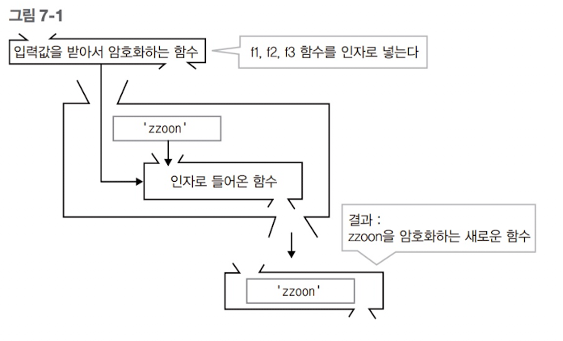

함수형 프로그래밍의 개념
함수형 프로그래밍은 함수의 조합으로 작업을 수행함을 의미한다. 중요한 것은 이 작업이 이루어지는 동안 작업에 필요한 데이터와 상태는 변하지 않는다는 점이다. 변할 수 있는 건 오로지 함수 뿐이다. 이 함수가 바로 연산의 대상이 된다. 기존 프로그래밍 방식에 익숙한 독자라면 이를 이해하기란 쉽지 않다. 쉬운 예를 들어보자. 이 예는 함수형 프로그래밍을 표현하는 슈도 코드다. 특정 문자열을 암호화하는 함수가 여러 개 있다고 하자. ========================================= f1 = encrypt1; f2 = encrypt2; f3 = encrypt3; ========================================= 여기서 f1,f2,f3 은 입력값이 정해지지 않고, 서로 다른 암호화 알고리즘만 있다. ========================================= pure_value = 'zzoon'; encrypted_value = get_encrypted(x); ========================================= pure_value는 암호화할 문자열이고, encrypted_value는 암호화된 문자열이다. get_encrypted()는 암호화 함수를 받아서 입력받은 함수로 pure_value를 암호화한 후 반환한다. 즉, 다음과 같이 처리할 수 있다. ========================================= encrypted_value = get_encrypted(f1); encrypted_value = get_encrypted(f2); encrypted_value = get_encrypted(f3); ========================================= 이를 그림으로 표현하면 다음과 같다.

여기서 pure_value는 작업에 필요한 데이터고 작업이 수행되는 동안 변하지 않는다. get_encrypted()가 작업하는 동안 변할 수 있는 것은 오로지 입력으로 들어오는 함수뿐이다. 이를 반대로 이야기하면 f1,f2,f3는 외부(여기서는 zzoon이라는 변수)에 아무런 영향을 미치지 않는 함수라고 할 수 있다. 이를 순수 함수(Pure function)라고 한다. 외부에 영향을 미치지 않으므로 이미 작성된 순수 함수로 다른 작업에 활용해도 문제가 없다. 또, get_encrypted() 함수도 주목해야 한다. get_encrypted 함수는 인자로서 f1,f2,f3 함수를 받는다. 그리고 이예에서는 결과값이 encrypted_value라는 값이지만 결과값을 또 다른 형태의 함수로서 반환할 수도 있다. 이렇게 함수를 또 하나의 값으로 간주하여 함수의 인자 혹은 반환값으로 사용할 수 있는 함수를 고계함수(Higher-order fucntion)라고 한다. 이 고계 함수 역시 함수형 프로그래밍에서 중요한 개념으로 자리하고 있다. 이 예에서 프로그래머는 입력으로 넣을 암호화 함수를 새롭게 만드는 방식으로 암호화 방법을 개선할 수 있다. 이와 같이 내부데이터 및 상태는 그대로 둔 채 제어할 함수를 변경 및 조합함으로써 원하는 결과를 얻어내는 것이 함수형 프로그래밍의 중요한 특성이다. 이 특성은 높은 수준의 모듈화가 가능하다는 점에서 큰 장점이 된다. 앞서 설명한 순수 함수의 조건을 충족하는 함수 구현으로 모듈 집약적인 프로그래밍이 가능하다. 간단한 모듈의 적절한 재구성과 조합으로 프로그래밍할 수 있다. NOTE_ 함수형 프로그래밍의 반대되는 개념을 명령형 프로그래밍이라고 한다. 우리가 C 등의 언어로 구현했던 방식이 대부분 이 프로그래밍 방식이다. 명령형 프로그래밍은 컴퓨터가 수행할 일의 명령을 순서대로 기술하는 프로그래밍 방식이다. 이 두 프로그래밍 패러다임의 차이를 설명하기 위해 함수하는 개념으로 이야기를 풀어가겠다. 명령형 프로그래밍 함수는 함수형 프로그래밍 언어 함수처럼 입력값을 받고 출력값을 계산하는 순수한 의미의 함수도 있지만, 특정 작업을 수행하는 여러가지 명령이 기술되어 있는 함수도 있다. 이러한 종류의 함수를 프로시저라고 한다. 프로시저는 함수형 프로그래밍의 순수 함수와는 목적 자체가 다르다. 예를 들어 printf라는 함수를 생각해보자. int ret = printf("print this screen\n"); printf 함수 역시 입력값과 결과값(반환값)이 있다. 하지만 중요한 것은 결과값이 아니라, printf 함수가 실행되면서 입력값을 화면에 출력하는 동작이 중요하다. 결과값은 이 동작이 제대로 수행되었는지를 알려주는 보조적인 역할을 한다. 실제로 printf 결과값을 받아서 처리하는 코드 자체가 없는 경우도 많다. 명령형 프로그래밍 함수는 이처럼 특정 작업의 순차적인 명령을 기술하는 데 중점을 둔다. 이러한 개념은 함수형 프로그래밍에서 말하는 순수 함수와는 거리가 멀다. 앞서 설명한 대로 함수형 프로그래밍 함수는 순수 함수로서 외부에 아무런 영향을 주지 않는 선에서 자신의 로직을 처리하여 결과를 반환하는 역할을 한다. 이 결과값을 얻는 것이 이 함수를 호출한 목적이고, 결과값으로 또 다른 작업을 처리하게 된다.